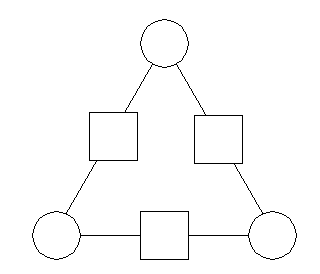
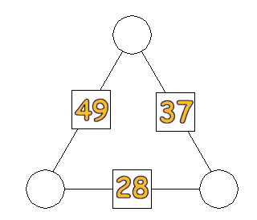

Arthur has invented a new puzzle to show his friends. He calls it: Arithmogons.He draws the following diagram first.
 Then he puts any three integers he likes in the circles. In the squares he puts the sum of whatever two integers appear on the ends of the corresponding side.
Before showing this to a friend, he erases the integers in the circles. He tells his friends to find the circle numbers, knowing only those in the boxes.
Here is a sample of Arthur's Arithmogons for you to solve.

EXTRA: while it's possible to solve an Arithmogon puzzle by guess-&-check, it would be much more efficient to develop, and prove, a logical step-by-step approach. Such a method exists. Please find it and prove why it works.
| Comments? Send e-mail. | Back to top | Go back to Home Page | Go back to Contents |